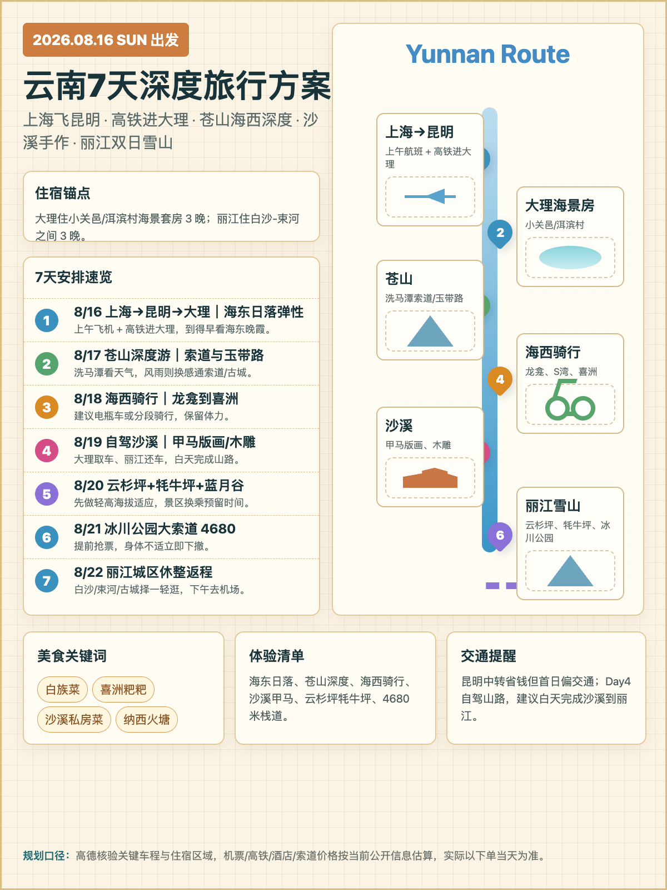
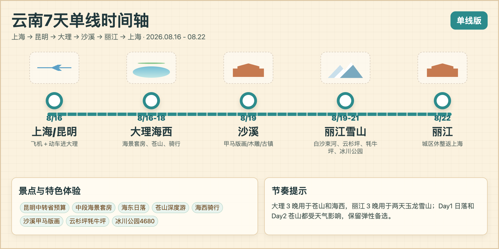

2026.08.16 - 08.22
4人｜两男两女｜舒适预算
单线深度方案 · 大理海景房 · 丽江双日雪山
云南7天深度旅行方案
上海飞昆明，高铁进入大理；大理3晚深玩苍山和海西，过沙溪手作后住丽江3晚，玉龙雪山拆成两天。
分享
复制链接

路线总览
上海 → 昆明 → 大理 → 苍山 → 海西 → 沙溪 → 丽江 → 上海

全部
交通
住宿
费用
展开全部
每日行程
可折叠 · 可筛选
↑